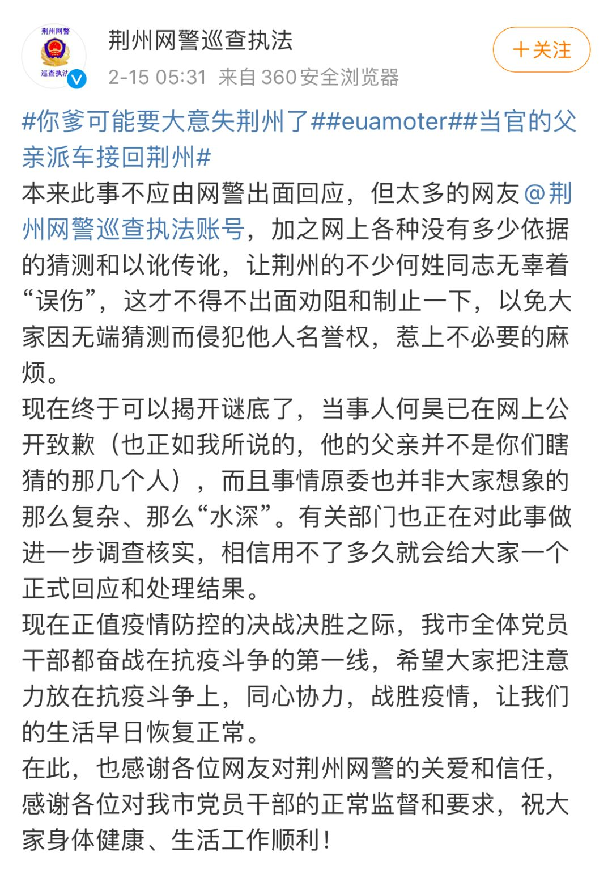

不管你爱与不爱都是历史的尘埃
原文链接 备份链接 2020年2月14日。 农历正月廿一。 武汉封城第廿三天。 天门封城第廿二天。 天门昨天发文，继续关十四天。眼前一黑，日更的flag摇摇欲坠。问犬火也说最近没有心情写，在看书。是啊，没输入哪来输出呢。就靠这每天糟心的新 …
澎湃新闻综合报道
14日，一名男子发布微博称，在湖北省全封路的情况下，通过“当官的”父亲的关系派车，自己从天门回到荆州，引发不少网友的质疑。

他还曾发过一段视频称“天门拜拜”。

自2020年1月24日13时起，天门市已经封闭全市公路进出口通道，含国省道路、县乡道路、村组道路，所有车辆、人员一律禁止通行。
另外，Euamoter在1月6日，通过微博晒出支付宝年度账单，图中显示，2019年全年总支出286万余元。
多个相关话题都上了微博热搜。


不少网友评论：你爹要大意失荆州。
麻妹本妹：大意失荆州
小飞燕与海：实力派坑爹
清尘点点：呵呵，坑爹+1，很好～ 估计已经被爹暴揍。。
15日凌晨，该男子在微博上发布道歉书称，其父亲叫何炎仿，是荆州市商务部门的一名科长，无权派车把他从天门接回。由于自己急于回家，其父亲利用朋友关系，在天门联系了一辆生活物资的返程车辆将其带回。“因为虚荣心作怪，在网上宣称是我父亲派车接回的。”
他也解释了支付宝年度账单截图是其经营的流水账单，并不是父亲给予的。

据中青报·中青网，公开信息显示，何炎仿为荆州市商务局市场运行调节科科长。记者多次联系何炎仿，未获得他对此事的回应。
警方：有关部门正在调查核实
15日凌晨，@荆州网警巡查执法 发布微博称称当事人何昊已在网上公开致歉，有关部门也正在对此事做进一步调查核实。

（澎湃新闻综合自中青报·中青网、新京报、环球网、新浪微博等）
戳这里进入
“全国新型冠状病毒感染病例实时地图”↓↓↓

本期编辑 常琛
推荐阅读


文章已于修改
原文链接 备份链接 2020年2月14日。 农历正月廿一。 武汉封城第廿三天。 天门封城第廿二天。 天门昨天发文，继续关十四天。眼前一黑，日更的flag摇摇欲坠。问犬火也说最近没有心情写，在看书。是啊，没输入哪来输出呢。就靠这每天糟心的新 …
原文链接 备份链接 Original 人物记者 人物 人物 Today 在一场庞大的对抗病毒的战役中，有一部分人被置于尴尬和灰色的境地。 《人物》记者对三位新冠肺炎疫情中的透析病人家属进行了采访，一位家属说：「在这个过程中，大家永远看到的 …
原文链接 备份链接 我们在郊区，离洪湖市区大概还有8公里左右，再加上春节期间置办了许多年货，蔬菜都是自家地里摘，所以基本上吃饭没有太大问题。 口述 | 余 光 整理 | 陈 冰 1月18日，儿子放寒假的第一天，我们一家三口开了14个小时的 …
原文链接 备份链接 Original 澎湃新闻 澎湃新闻 澎湃新闻 Today 澎湃新闻记者 胡丹萍 汤琪 罗梓晗 实习生 刘昱秀 家住武汉市青山区的吴娟从来没有这样期待父亲能拿到一个核酸检测阳性的结果。 从1月26日出现乏力、咳嗽等症状 …
原文链接 备份链接 王宏超/文 父亲患病 父亲今年73岁，有高血压和心脏病等基础病史，从1月28日住院到今天，已经整整11天，这也是我和母亲开始单独居家隔离的时长。我和母亲还有三天就可以解除居家隔离观察，而父亲的情况则并不让人乐观。 父亲 …